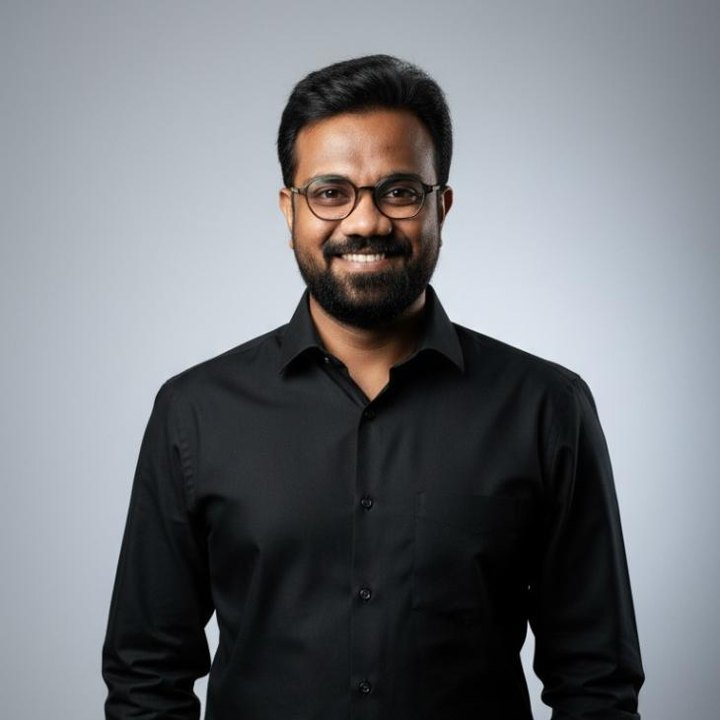
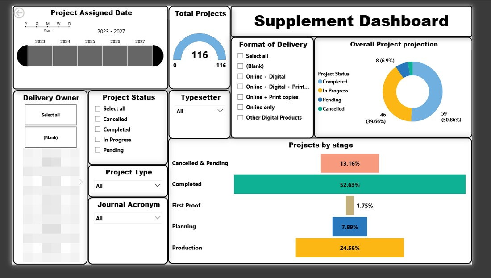
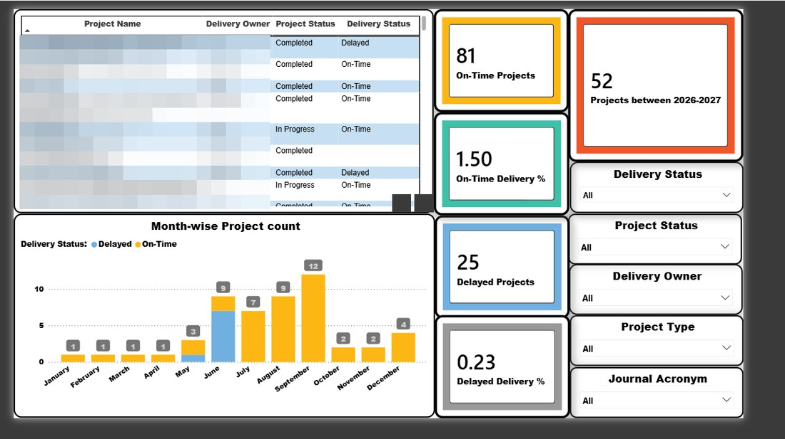

Turning complex operations into on-time delivery — with Tableau & Power BI dashboards, automation, and operational know-how.
I'm Vignesh, a Delivery Owner who pairs operational execution with analytical depth. Over nine years across Groupon, Amazon, and Elsevier, I've owned delivery end-to-end while building the automation, AI workflows, and risk governance underneath it.

Curiosity, turned into a method
I started out as an electronics & communication engineer and discovered, along the way, that I wanted to understand more than circuits — I became fascinated by people, processes, and the systems that hold them together. So I kept learning: Psychology, Healthcare Management, Yoga for Human Excellence, and now Life Sciences and data tools — each picked up out of plain curiosity and a refusal to settle for "good enough."
Now you know the mix of lens that I bring to operations. My career moved from Buyer/Customer and Seller/Merchant facing support roles in marketplace compliance and fraud detection at Groupon and Amazon to delivery governance with innovation, AI assistance and project management at Elsevier, and the two sides now reinforce each other: I build the automation, and I build the controls that keep it trustworthy.
Today, as a Delivery Owner in Global Pharma Operations, I own end-to-end delivery of global publishing projects with a 100% on-time record — while spearheading the work underneath it: an automated system for a tool-free process, Power Automate flows, Power BI dashboards for delivery and leadership views, and SOP/RASCI frameworks that make the whole thing audit-ready. I also serve as a Generative AI skill development SME, helping teams adopt AI responsibly.
Decisions grounded in CSAT, SLA, and engagement signals — measured, never guessed.
SOPs and RASCI frameworks that make good outcomes repeatable and audit-ready.
Teams trained, trusted, and engaged enough to own the result themselves.
A decade of growing ownership, developing knowledge, continuous learning, innovation and people trust.
From frontline support, to fraud & quality investigation, to owning projects and the systems beneath it.
Elsevier
JAN 2022 — PRESENT · 4 YRS 6 MOS- Own end-to-end delivery of global publishing projects — 100% on-time completion across international & Spanish journal supplements, digital editions, and regional transitions through structured planning and prioritization.
- Built automation that didn't exist before: a custom Abstract Scheduler, Power Automate flows syncing SharePoint and Excel, and Power BI dashboards with separate Delivery Owner and GPO leadership views.
- Act as Generative AI SME — reviewing AI learning pathways, advising on fair-use/AI principles, and supporting responsible adoption and workflow validation.
- Drove data accuracy and financial governance by validating project setup, pricing, and Oracle R12 configurations, reducing billing discrepancies.
- Authored end-to-end SOPs (Spanish supplements, ABP) and a RASCI accountability framework now used across the team; led the in-house transition of Spanish journals and digital editions with zero disruption.
- Improved engagement as a change facilitator: OV 7.7 → 8.2, eNPS 24 → 50.
- Sustained 98% CSAT vs 95% target through first-contact resolution; cleared 190+ incidents/day to restore queues to BAU.
- Performed root-cause analysis on CSAT/DSAT trends to drive targeted process improvements.
- Founded and maintained the Researcher Support Hub on SharePoint — a single source of playbook for tools, documents, and resources.
- Led Centre of Excellence pillars (Training, Voice of Customer, Communication) with OKRs, Confluence, and bite-sized training; trained new hires across Chennai and Beijing.
- Knowledge Owner for customer-facing articles, JIF, and Guide for Authors; supported PACE & Aurora workflow audits by identifying classification-accuracy gaps.
- GenAI evaluation & feedback for AI learning materials, as SME reviewer for the Generative AI Learning pathway (Future Skills program).
- Led process transition to Spanish & Mexican journal projects and Digital Editions (Flipping Book) via in-house processing — zero disruption, reduced vendor dependency.
- Built the APAC Oracle R12 tracker, a Delivery Owner project tracker, and a Power BI Supplement Dashboard for data accuracy, invoicing stability, and project tracking.
- Created a centralized SharePoint knowledge hub for documents, tools, and streamlined functional workflows.
- Ran audits on AI-assisted workflows (PACE, Aurora automation) using gap-analysis and classification-accuracy improvement, plus process drives to cut duplicate/false cases.
Amazon
FEB 2019 — DEC 2021 · 2 YRS 11 MOS- Performed risk assessment and compliance validation for restricted listings, preventing non-compliant entries.
- Investigated document/invoice manipulation through evidence verification and outbound checks, protecting platform integrity.
- Delivered high-accuracy decisions under strict SLAs; built a manipulation-check reference for commonly failed invoices.
- Mentored specialists and cross-trained associates, reducing escalations.
- Promoted to Mentor through a competitive evaluation; coached new hires to production readiness.
- Resolved complex Selling Partner issues across NA, UK & EU (payments, listings, account management, policy).
- Exceeded benchmarks at 30+ critical cases/day vs 25 target, ~98% quality vs 95%.
- Led onboarding, refresher training, and practical simulations; cross-skilled on Feedback Review and Restricted Product Approval through the pandemic BCP.
- Resolved Selling Partner queries on payments, listings, account management, and product detail pages across global marketplaces.
- Handled high-volume case queues while maintaining SLA adherence, quality, and process compliance.
- Applied analytical thinking to diagnose issues and interpret policy for accurate first-contact resolutions, progressing into mentoring responsibilities.
- Designed a standardized workflow to fix incorrect attribute updates on Amazon detail pages, improving data accuracy.
- Built a manipulation-check framework to strengthen invoice verification and detect common fraud patterns.
- Created structured training materials and process guides; delivered audit insights and weekly quality feedback that reduced process errors.
- Supported the feedback review team and restricted-product approval workflows through upskilling across multiple verticals.
Revamp Hospital
OCT 2019 · INTERNSHIP- Conducted psychological assessments and case evaluations under supervision, supporting diagnosis and treatment planning for diverse patient profiles.
- Applied active listening and empathetic communication to build trust and support therapeutic interactions.
- Contributed behavioural-analysis insights to clinical discussions; documented observations and maintained confidential, ethically compliant case records.
- Built a foundation in human behaviour that still shapes my approach to stakeholder management, coaching, and customer experience.
Groupon
OCT 2016 — DEC 2018 · 2 YRS 3 MOS- Handled complex queries across deals, travel, goods, and local services in a fast-paced e-commerce environment.
- Resolved high-priority issues — order discrepancies, refunds, and merchant disputes — through structured, policy-based decision-making.
- Managed refund validations, eligibility assessments, and merchant coordination in line with platform policy and operational standards.
- Collaborated with Merchant Support, Finance, and Escalations to resolve systemic issues and improve customer experience.
- Delivered day-to-day support via email and chat for orders, refunds, and account management.
- Handled high-volume interactions while maintaining process adherence, quality standards, and SLA compliance.
- Used structured problem-solving to interpret policy and resolve cases, growing into advanced responsibilities.
- Member of the Global Live Chat UX improvement program — simplified the interface and raised handling capacity to 3 concurrent chats.
- Drove GEMBA process improvements, refining macro templates and communication quality for a better customer experience.
- Redesigned case-transfer workflows and reason codes, reducing SLA breaches from inefficient queue handling.
- Migrated internal documentation from static PDFs to Zendesk-integrated workflows, improving accessibility and resolution efficiency.
Dashboards I designed & built
Power BI dashboards I built for delivery tracking and leadership views. Business and personal data has been redacted.


Analytical depth + implementation & execution + people trust.
A multi-disciplinary foundation
Engineering, psychology, healthcare, and human excellence — the range behind a process-and-people approach.
MSc, Yoga for Human Excellence
MBA, Healthcare Administration
MA, Clinical Psychology
BE, Electronics & Communication
BSc, Psychology
A short introduction
Let's trade ideas.
If you're working on operations transformation, automation, risk intelligence, or AI adoption at scale, I'd be glad to connect.